Recent Text-To-Speech (TTS) systems have achieved strong naturalness and zero-shot voice cloning performance, but fine-grained control of expressive speech at the word or phoneme level remains challenging. We propose CtrlSpeech, a controllable, expressive TTS framework with coarse-to-fine control. Built on the DiTAR architecture, CtrlSpeech combines global speaker conditioning with phone-aligned pitch, loudness, and duration signals, enabling localized prosodic control while preserving the target speaker's timbre. This design allows users to adjust expressive attributes at a fine temporal granularity, making speech refinement more flexible and controllable. Experimental results show that CtrlSpeech achieves competitive zero-shot TTS performance and improves controllability over expressive attributes, demonstrating its effectiveness for flexible and practical expressive speech synthesis.
Architecture
System Overview
Figure 1. CtrlSpeech follows a coarse-to-fine workflow: users first provide input text, and optionally specify speaker settings or provide prompt audio; in subsequent rounds, they iteratively refine pitch, loudness, and word duration.
Method
Coarse-to-Fine Control Design
Coarse Global Control→Phone-Level Control→Local Refinement
Stage 1 · Coarse
Global Speaker / Timbre Conditioning
Reference speech or speaker embeddings provide utterance-level conditioning, preserving the target speaker identity and vocal timbre.
prompt speechspeaker embeddingtimbre
Stage 2 · Fine
Phone-Aligned Prosody Control
Pitch, loudness, and duration controls are aligned to phones, enabling explicit manipulation of intonation, intensity, and rhythm at fine temporal granularity.
pitchloudnessdurationphone alignment
Stage 3 · Refine
Iterative Local Prosody Refinement
Users can adjust selected phone- or word-level controls and regenerate refined speech while keeping the global speaker condition fixed.
Due to the characteristics of the training data, our model tends to generate cloned speech at a relatively fast speaking rate.
Prompt Speech
Target Text
Target Speech
I guess I’ll just decide later when I have everything in front of me.
The clouds drift over the horizon, casting muted shadows across the sunlit field.
The sky darkened, as if nature itself was enraged, ready to unleash its fury.
Her voice barely rose above a whisper, each word a fragile step across thin ice.
Your sweater collection has grown quite impressively this season.
Why do I have to repeat everything ten times?
Upon trying her hand at painting, she discovered a natural talent within her.
We danced under the stars, losing ourselves in sheer delight.
Gloom settled in the valley, a heavy MIST rolling like silent tears across the land.
Table 1. Coarse global control examples using prompt speech to condition model-generated target speech for the target text.
Listen
Expressive Control Samples
Each sample keeps the global speaker condition fixed and compares the original synthesis against the controlled result.
Pitch
four requested contours on one utterance
All four samples share the same speaker prompt and the same original synthesis of the target text The storm's rage lashed out unrelentingly at the shoreline. — only the requested pitch curve changes. In every figure, baseline (grey) is the pitch contour of the original synthesis, requested (purple) is the target curve given to the model, and achieved (dashed) is the contour measured from the controlled output.
Sample 1
Requested a steady rise from low to high across the utterance.
Original
Controlled
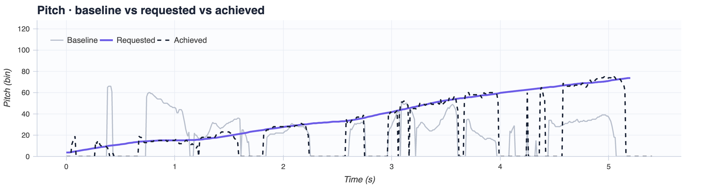
Sample 2
Requested a steady fall from high to low across the utterance.
Original
Controlled
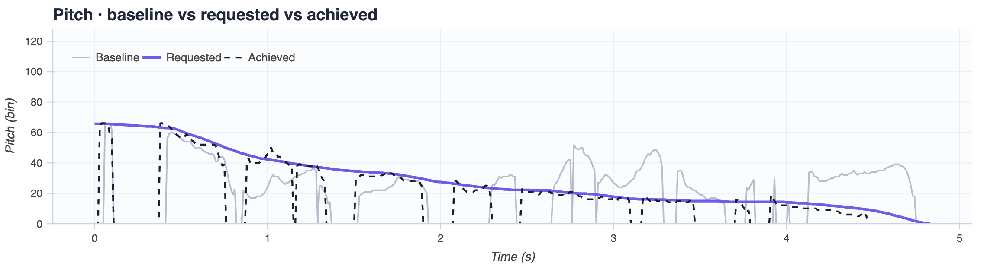
Sample 3
Requested a flat contour, holding one level throughout for a monotone reading.
Original
Controlled
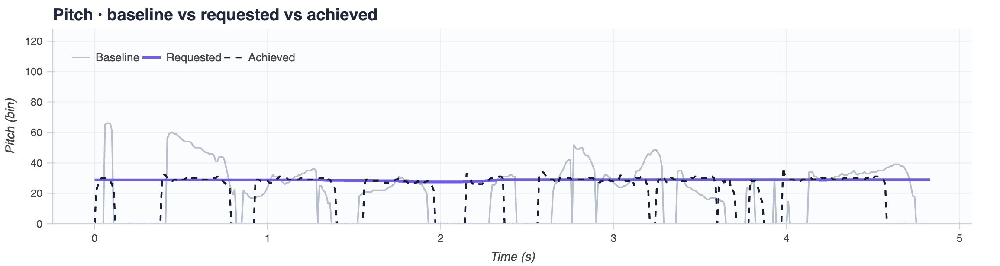
Sample 4
Requested a fall-then-rise contour, dipping mid-utterance before climbing back up.
Original
Controlled
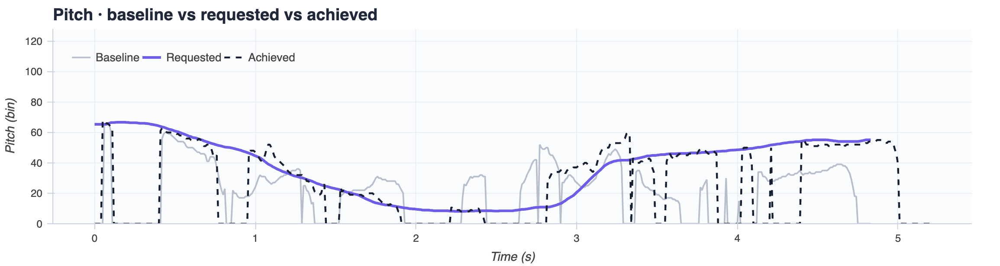
Loudness
four requested contours on one utterance
All four samples share the same speaker prompt and the same original synthesis of the target text Her voice barely rose above a whisper, each word a fragile step across thin ice. — only the requested loudness curve changes. In every figure, baseline (grey) is the loudness contour of the original synthesis, requested (teal) is the target curve given to the model, and achieved (dashed) is the contour measured from the controlled output.
Sample 1
Requested a steady rise from quiet to loud across the utterance.
Original
Controlled
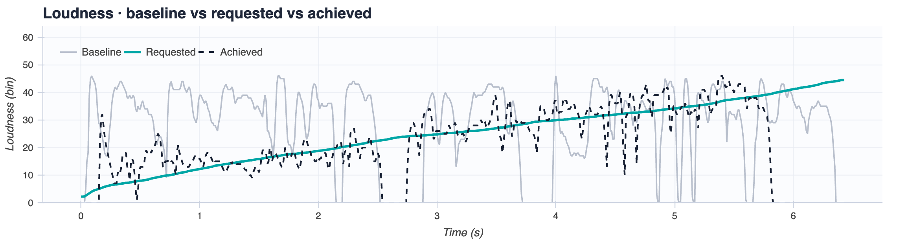
Sample 2
Requested a steady fall, fading from loud down to near silence by the end.
Original
Controlled
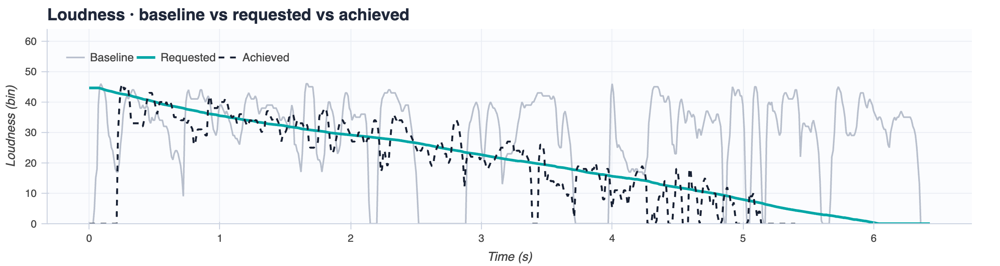
Sample 3
Requested a flat contour, holding one steady level in place of the baseline's swings.
Original
Controlled
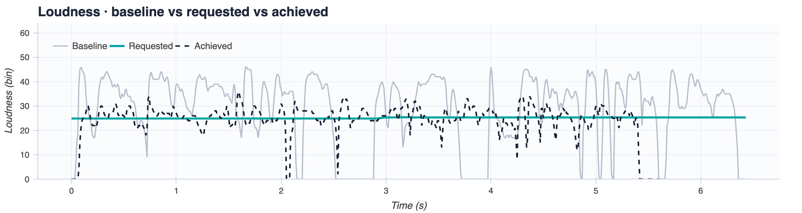
Sample 4
Requested loud–quiet–loud, holding full level at the edges with a dip through the middle.
Original
Controlled
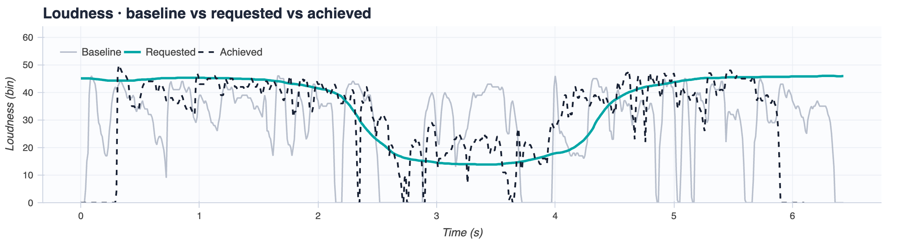
Duration
per-word timing edits on one utterance
All four samples share the same speaker prompt and the same original synthesis of the target text If you dream a thing more than once, it's sure to come true. Have faith in your dreams. — each one retimes a single word. In every figure, block width encodes each word's duration: baseline (bottom) is the original synthesis, requested (middle) is the target timing given to the model, and achieved (top) is the timing measured from the controlled output. The outlined block marks the edited word.
Sample 1
Lengthened the closing word dreams to roughly twice its baseline length.
Original
Controlled
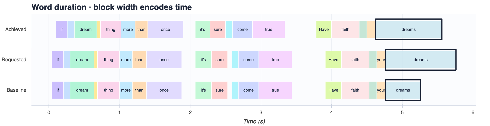
Sample 2
Lengthenedfaith in the final phrase, drawing the word out without disturbing its neighbours.
Original
Controlled
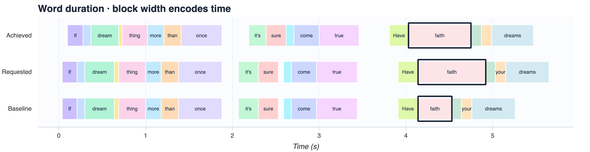
Sample 3
Lengtheneddream near the start of the utterance, showing the edit works away from phrase boundaries.
Original
Controlled
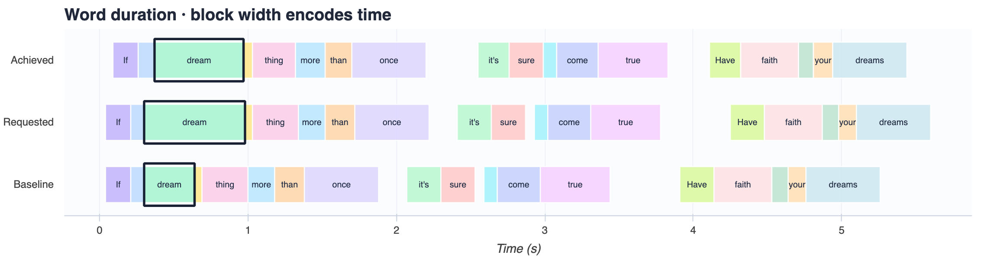
Sample 4
Shortenedonce to about half its baseline length, clipping the utterance shorter overall.
Original
Controlled
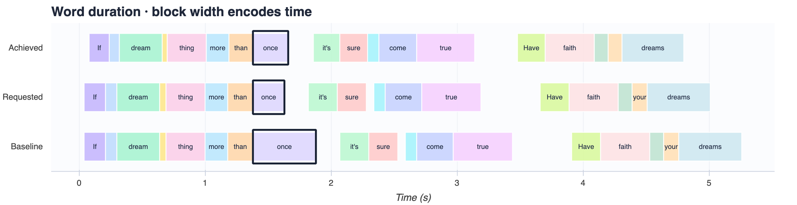
Table 2. Phone-aligned control examples across pitch, loudness, and duration. Each attribute applies four different requested controls to a single utterance, holding the speaker prompt and the original synthesis fixed.
Cite
BibTeX
zheng2026ctrlspeech.bib
@inproceedings{zheng2026ctrlspeech,title={CtrlSpeech: Coarse-to-Fine Control for Expressive Speech Synthesis},author={Zheng, Zhisheng and Sun, Xiaohang and Liu, Zhu and Chen, Caren and Kumar, Rohith and Aggarwal, Manoj and Medioni, Gerard and Harwath, David},booktitle={Proc. Interspeech 2026},year={2026}}
Get in touch
Contact
Questions, feedback, or collaboration inquiries about CtrlSpeech are welcome — please email zszheng@utexas.edu.